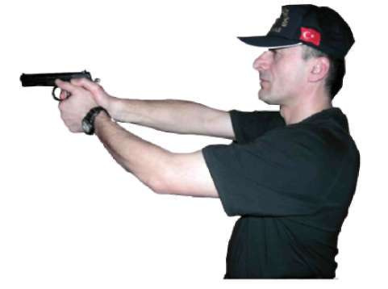
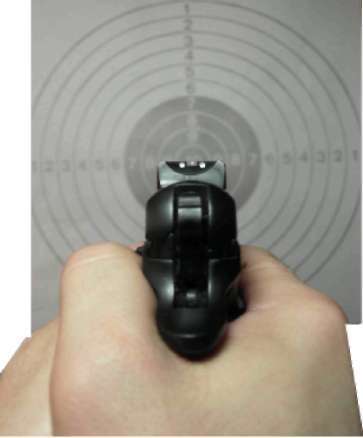

BÖLÜM
TEMEL ATIŞ TEKNİKLERİ
Resim-1.c) Nişan Alma (Yarı Otomatik Tabanca) d) NEFES KONTROLÜ
Nefes kontrolü, atıcılığın temel prensiplerindendir. Bu prensip, atıcı stresli olmadığında ya da zaman sıkıntısı çekmediğinde uygulanır. Çatışma ve yakın mücadele durumlarında hem stres hem de zaman sıkıntısı mevcut olduğu için nefes kontrolü uygulaması yapılamaz.(Bakınız Resim-1.d) Resim-1.d) Nefes Kontrolü (Yarı Otomatik Tabanca) e) TETİK ÇEKME
Tetik çekme, temel atış teknikleri arasında önemli unsurlardan birisidir. Tetiği doğru çekme, tetiğe yapılan baskıyı artırarak sürpriz bir ateşleme olmasını sağlamaktır. Tetik, tetiği çekecek parmağın ucuyla ilk boğumu arasının tetiği kavramasıyla çekilmelidir. Silahın hedefe yönelik olduğu tüm zamanlarda parmak tetikle temas hâlinde olmalıdır. (Peş peşe atışlar arasında parmak tetiğe vurmamalıdır; parmak, tetikle beraber hareket etmelidir) (Bakınız Resim-1.e) 29
Resim-1.e) Tetik Çekme (Yarı Otomatik Tabanca) Temel Atış Tekniği Çalışma Prensipleri
^ Emniyet tedbirlerini okuyun, atış poligonunda atış emniyeti ile ilgili gerekli önlemleri alın.
^ Eğitime katılan herkesin vücudunu, basit ısınma teknikleri ile ısındırarak çalışmaya hazırlayın, silah ve şarjörleri kontrol edip koruyucu malzemeleri giyin ve giydirin.
^ Temel atış tekniği ile ilgili atışlı çalışma yapmadan önce tekniğin tamamını kapsayacak atışsız pratik çalışma yaptırın.
^ Poligonun büyüklüğüne göre bu tekniği çalışmak için yerleştireceğiniz daireli hedef sayısını ve çalışma yaptıracağınız personel sayısını belirleyin.
^ Tekniği çalışmaya, önce 5 metre mesafeden başlayın ve daha sonra mesafeyi 10-15-20-25 metreye çıkararak çalışmayı devam ettirin.
^ Atış yapacak personele, tek şarjöre 10 adet fişek doldurtup, şarjörü tabancalarına taktırın. Hedefin 5 metre mesafede karşısına geçirip atış
pozisyonu aldırın ve yukarıdaki temel atış prensiplerini uygulatarak hedefe tek, tek atış yaptırın.
^ Atış yapan personelin vuruşlarının tamamının, hedefin siyah kısmında olmasına dikkat edin ve belirtilen bir üst mesafeye çıkararak atış yaptırmaya devam edin.
^ 25 metre mesafedeki vuruşların tamamının, hedefin siyah kısmında olması, başarılı şekilde yapılmış bir atışın göstergesidir.